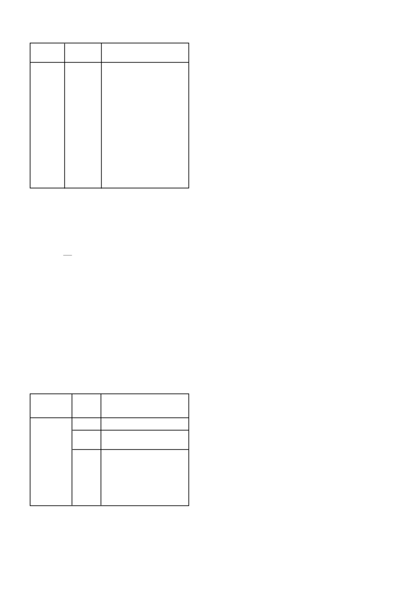

4.3
Ongewenste onkruide:
4.4
Geneties manipuleerde gewasse: Glifosaat ver-
draagsame katoen, sojabone en mielies
1.
TOUCHDOWN Forte HITECH
kan op glifosaat verdraag-
same katoen,
sojaboon en mielie plante gespuit word.Enige
individuele plante wat nie die glifosaat geen bevat nie en met
glifosaat bevattende produkte soos
TOUCHDOWN Forte
HITECH
gespuit word sal afsterf.
2.
Sorg moet egter gedra word dat
TOUCHDOWN Forte
HITECH net
op glifosaat verdraagsame gewasse en kultivars
gespuit word.
3.
Wegdrywing of die gebruik van van
TOUCHDOWN Forte
HITECH
na konvensionele (nie glifosaat verdraagsame)
gewasse moet verhoed word aangesien dit tot ernstige
gewas skade, opbrengsverliese en selfs totale plant vernietig-
ing sal lei.
4.
Onder
geen
omstandighede
mag
lugtoediening
van
TOUCHDOWN Forte HITECH
in glifosaat verdraagsame
gewasse gedoen word nie.
5.
Aangesien Syngenta nie die kwaliteit van glifosaat verdraag-
same gewasse se saadproduksie beheer nie, kan geen ver-
antwoordelikheid deur Syngenta geneem word indien sekere
individue wat nie die glifosaat verdraagsame geen bevat nie
en gevolglik afsterf na bespuiting met
TOUCHDOWN Forte
HITECH.
6.
Wanneer beplan word om glifosaat verdraagsame gewasse
te plant, neem in ag hoe opslag plante in die daaropvol-
gende jaar beheer gaan word aangesien
TOUCHDOWN
Forte HITECH
nie opslag plante van glifosaat verdraagsame
gewasse beheer nie.
ALGEMEEN:
1.
Daar moet noukeurig gelet word op die gebruiksaanwysings
en waarskuwings soos op hierdie etiket aangesien dit ook vir
glifosaat verdraagsame gewasse geld.
2.
Die onkruid spektrum in katoen, sojaboon en mielie lande kan
weens verskillende redes soos streke, vog, lig en grond tipe
baie verskillend wees en in verskillende onkruid groeistadia
wees. Die tabel soos hierbo verteenwoordig toedienings-
hoeveelhede wat meeste onkruid populasies behoort te
GEWAS
Glifosaat
verdraag-
same katoen,
sojabone en
mielies.
DOSIS
1,5
l
/ha
1,8
l
/ha
2,2
l
/ha
ONKRUIDE
(Verwys na die tabelle hierbo vir
individuele onkruide)
Voor die onkruide 100 mm hoog is
Wanneer die onkruide 100 - 200
mm hoog is
Die volgende onkruide word wis-
selvallig beheer en ‘n tweede
toediening mag nodig wees:
Commelina bengalensis,
Chenopodium
spp
,
Cyperus esculentus
Ipomeae purpurea
en
Portulaca oleracea
TOUCHDOWN Forte HITECH
/ 12
SITUASIE
Onge-
wenste
onkruide
Produk / ha
2
l
- 4
l
/ ha
OPMERKINGS
Lugtoediening:
Dien toe op aktief groeiende plante
in 30 - 50
l
water/ha.
Toedieningshoeveelheid sal af hang
van plantgrootte en -digtheid.
Plante 500 - 900 mm; dien 2
l
/
ha toe.
Plante 1 - 1,9 m; dien 2,6
l
/ha
toe.
Plante > 2 m; dien 3,3
l
/ha toe.
Op baie digte plantgroei dien 4
l
/
ha toe.
Moet nie meer as 2
l
/ha in ekolo-
gies sensitiewe gebiede toedien
nie.
Grondtoediening:
Dien toe soos bo in 100 - 600
l
water/ha.
beheer binne die parameters uiteengesit in die etiket. Ander
vereistes ten opsigte van verskillende onkruide en groeistadia
moet aan voldoen word.
3.
Toedienings moet baie vroeg in die lewensiklus van die
on kruide gemaak word maar beslis voor die 6 blaar stadium
van die onkruide. Slegs een toediening van
TOUCHDOWN
Forte HITECH
behoort dan die bestaande populasie te
beheer. Dit behoort ook onkruid kompetisie in ‘n baie sensi-
tiewe stadium van die katoen, sojabone en mielies te beperk.
4.
Geen nawerking word met
TOUCHDOWN Forte HITECH
verkry nie en herhaaldelike opvolg toedienings soos nuwe
onkruide ontkiem, sal benodig word.
Glifosaat verdraagsame sojabone:
5.
TOUCHDOWN Forte HITECH
kan na-opkoms op glifosaat
verdraagsame sojabone toegedien word van net na ontkiem-
ing tot en met die einde van die blom periode.
6.
‘n Minimum onthoudings periode van 14 dae moet tussen die
laaste toediening en oes gelaat word.
7.
Tot 3 toedienings van
TOUCHDOWN Forte HITECH
kan
gemaak word op glifosaat verdraagsame sojabone sonder
enige skade aan die gewas. Moet nie meer as 7,2
l
/ha (3600
gse/ha) kumulatief in een gegewe seisoen spuit nie.
8.
Die gebruik van residuele onkruiddoders word te alle tye
aanbeveel aangesien sojabone nie enige onkruid kompetisie
verdra nie. METAGAN GOLD en BATELEUR GOLD (L6136)
moet met plant gebruik word en
TOUCHDOWN Forte
HITECH
moet slegs gebruik word om onkruide wat nie
deur die vooropkoms toediening beheer is nie, te beheer.
METAGAN GOLD kan in kombinasie met
TOUCHDOWN
Forte HITECH
gespuit word om residuele grasbeheer te
verleen.
Glifosaat verdraagsame mielies:
9.
TOUCHDOWN Forte HITECH
may be applied post-emer-
gence in glyphosate tolerant maize (e.g. Roundup Ready
®
,
Agrisure GT
®
) for the control of the weeds listed.
10.
TOUCHDOWN Forte HITECH
kan op glifosaat verdraag-
same mielies gespuit word slegs vanaf opkoms tot die V8
blaar stadium van die mielies. Hierdie stadium word bereik
wanneer die eerste plante 8 blare met toegevoude skouers
om die stam het.
(Die werklike getal blare mag meer as 8
wees).
11.
Moet nie breedwerpige toedienings van
TOUCHDOWN
Forte HITECH
maak indien meganiese skade teenwoordig
is of mag voorkom weens die toedienings apparaat nie of as
haelskade voorkom nie.
12.
Waar opvolg toedienings nodig is om spesifieke onkruid-
spesies (bv.
Cyperus esculentus
) te beheer, moet die 2de
toediening nie binne 10 dae van die eerste plaasvind nie om
die onkruide kans te gee om weer aktiefgroeiend te word.
13.
Indien die mielies verby die V8 stadium is, moet gerigte
bespuitings gedoen word.
14.
Voorsorg moet getref word om nie die reproduktiewe dele van
die mielieplant raak te spuit nie.
15.
Op glifosaat weerstandbiedende mielies mag tot 2 toedie-
nings van 2,2
l
/ha elk toegedien word sonder enige skade
aan die gewas. Moenie meer as 4,4
l
/ha (2160 g ae/ha) in een
seisoen toedien nie.
16.
Die gebruik van residuele onkruiddoders soos CALLISTO,
DUAL GOLD en PRIMAGRAM GOLD (L7308) tydens plant
word aanbeveel aangesien mielies nie onkruidkompetisie
verdra nie.
17.
TOUCHDOWN Forte HITECH
moet later in die seisoen na
die aanvanklike toediening van residuele onkruiddoders met
plant, gebruik word om nuwe onkruidgroei of moeilik beheer-
bare onkruide te beheer.
18.
TOUCHDOWN Forte HITECH
kan in tenkmengsels met
CALLISTO en METAGAN GOLD of GARDOPRIM PLUS
GOLD toegedien word om na-opkoms residuele onkruid-
beheer te voorsien.
19.
TOUCHDOWN Forte HITECH
mag nie met atrazine bevat-
tende produkte
bv. GESAPRIM 90 WG (L4764) of GESAPRIM
SUPER (L3914) of PRIMAGRAM GOLD of enige bymiddels
aanbeveel of gebruik word nie. Die na-opkoms aanbeve-
ling van CALLISTO soos in tabel 6.1.2 op die CALLISTO
etiket moet dan verander word om GESAPRIM 90WG of
GESAPRIM SUPER of PRIMAGRAM GOLD te vervang met
TOUCHDOWN Forte HITECH.
20.
Geen tenkmengsel met TOUCHDOWN Forte HITECH
